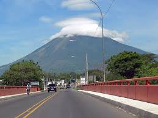
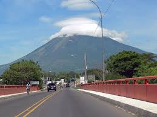

Historia de San Miguel
La conquista del actual territorio salvadoreño inició en el año 1525, cuando las tropas de Pedro de Alvarado atravesaron el río Paz. Cuatro años después, Pedrarias Dávila —quien tenía bajo su control el territorio de Nicaragua— comisionó a Martín de Estete con fines de exploración y anexión del territorio ubicado al oriente del río Lempa. Aunque la misión de Estete fracasó, Alvarado decidió contrarrestar las pretensiones de Dávila, y por ello delegó a Luis de Moscoso para que fundase una villa. Moscoso se trasladó con 120 soldados españoles y —probablemente el 8 de mayo de 1530, festividad del Arcángel Miguel— estableció la villa de San Miguel de la Frontera,11en las cercanías del poblado indígena de Usulután, en una región llamada por los naturales «Popocatépet». Sin embargo, se dice que Pedro de Alvarado contribuyó al despoblamiento del sitio, cuando embarcó a varios individuos para su expedición al Perú; por lo que se volvió a restablecer en 1535 por Cristóbal de la Cueva y bajo la advocación de Nuestra Señora de la Victoria. El acta fundacional de ese villorrio es la única existente para una ciudad fundada en la colonia española en El Salvador, y fue incluida en un juicio de residencia de De la Cueva.1213A finales del año 1536, el poblado sufrió el embate de huestes indígenas, en medio de un alzamiento lenca liderado por Lempira y a la que sobrevivió con el auxilio de las tropas de San Salvador.12 Para 1572, Juan López de Velasco describía a San Miguel como una «comarca más caliente que fría», de buena producción agrícola de maíz y cacao; así como contaba entre sus recursos a las minas de plata que eran difíciles de explotar por la escasez de agua. Tenía además «650 habitantes, pues residían en ella 130 vecinos españoles o jefes de familia, de los cuales 60 eran encomenderos». Según Jorge Lardé y Larín, adquirió el título de ciudad en 1574.11 A principios de 1586, la ciudad fue destruida por un incendio que redujo también a escombros el convento de San Francisco que había sido erigido en 1574. Por este motivo, los habitantes se trasladaron a su actual asiento, que para junio de aquel año tenía una población de 150 habitantes.11 Para el año 1682, las zonas del golfo de Fonseca y la bahía del Espíritu Santo eran asediadas por piratas. San Miguel tomó las providencias necesarias, y pese a que no sufrió ningún ataque, sí lo fueron poblados de la costa. Suceso notable de 1699 fue la erupción del volcán vecino, llamado en ese entonces «Poshotlán».
Poblacion 247 119 hab(2014)